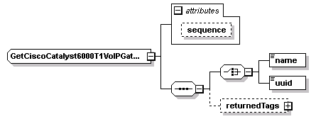

| diagram |
 |
| namespace |
http://www.cisco.com/AXL/API/10.5 |
| children |
name uuid returnedTags |
| used by |
|
| attributes |
| Name | Type | Use | Default | Fixed | Annotation | | sequence | xsd:unsignedLong | optional | | | |
|
| source |
<xsd:complexType name="GetCiscoCatalyst6000T1VoIPGatewayPriReq">
<xsd:sequence>
<xsd:choice>
<xsd:element name="name" type="axlapi:String100"/>
<xsd:element name="uuid" type="axlapi:XUUID"/>
</xsd:choice>
<xsd:element name="returnedTags" type="axlapi:RCiscoCatalyst6000T1VoIPGatewayPri" minOccurs="0"/>
</xsd:sequence>
<xsd:attribute name="sequence" type="xsd:unsignedLong" use="optional"/>
</xsd:complexType> |